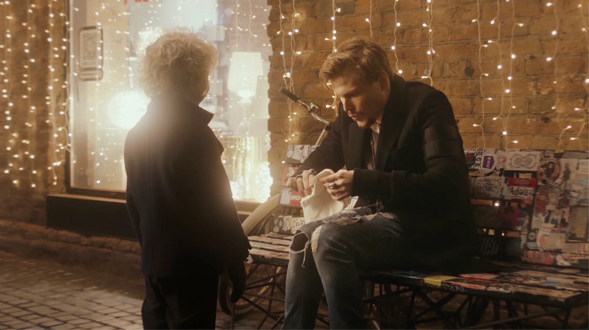
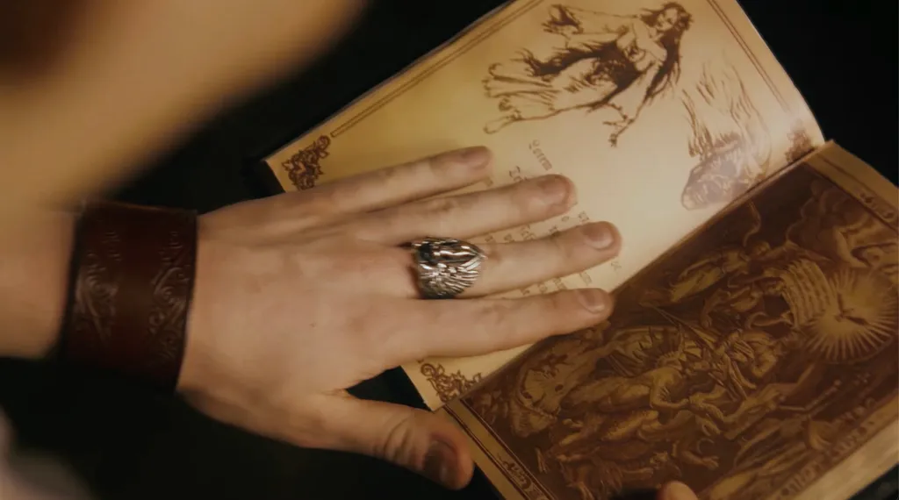
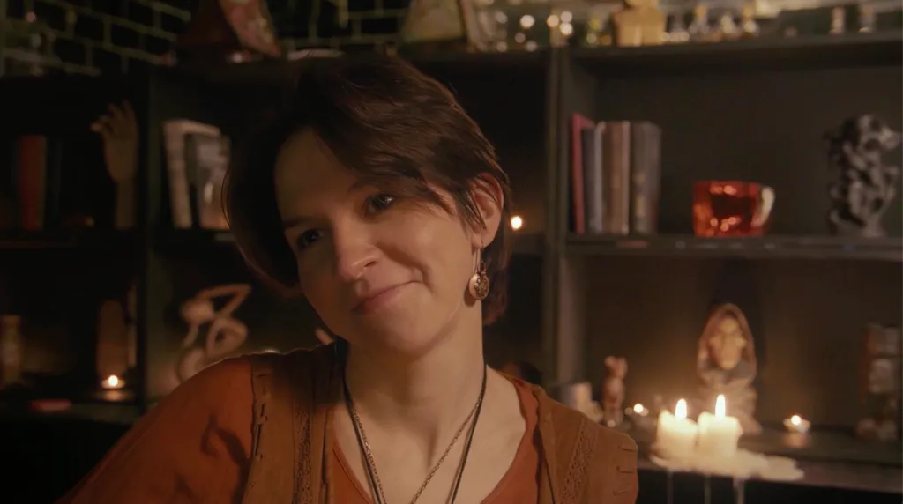
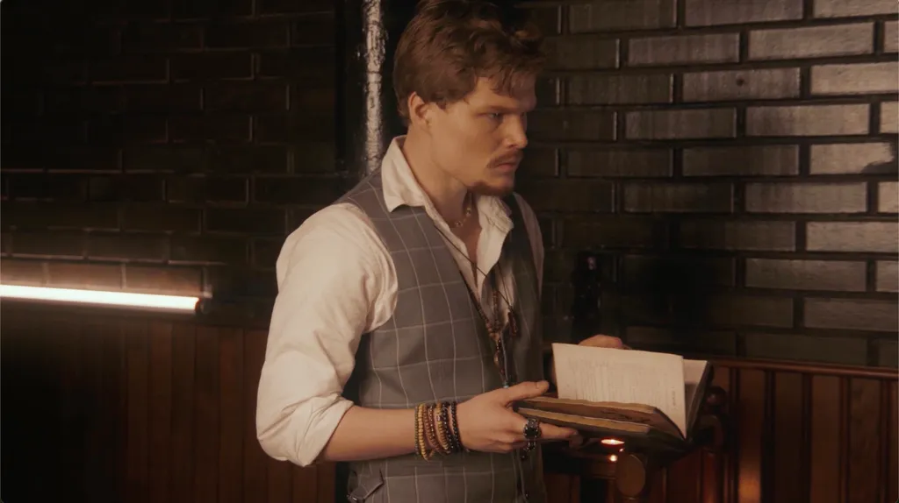
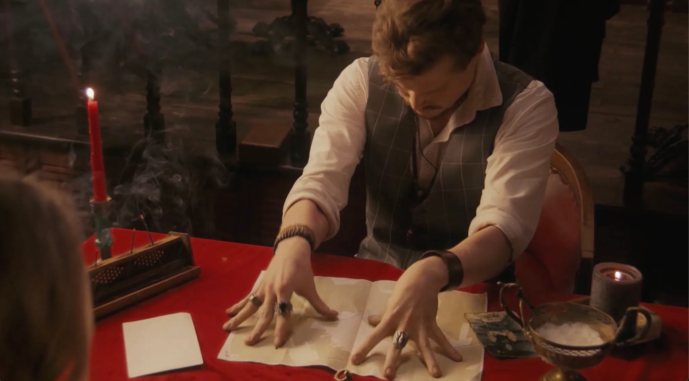
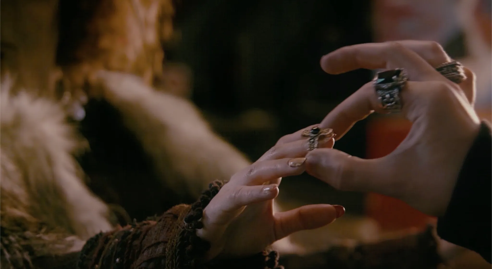
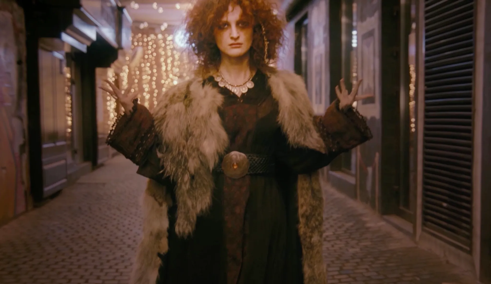
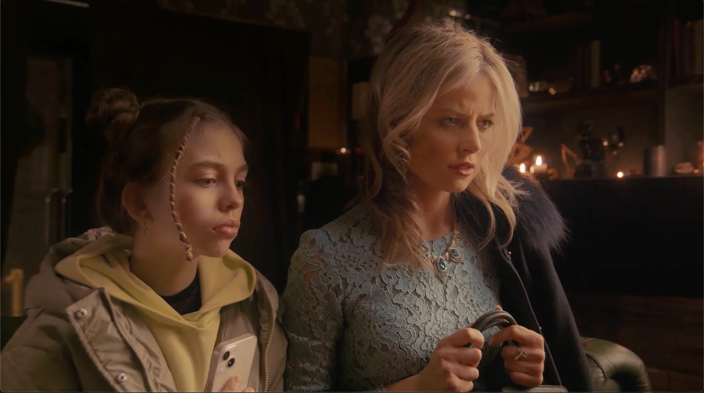
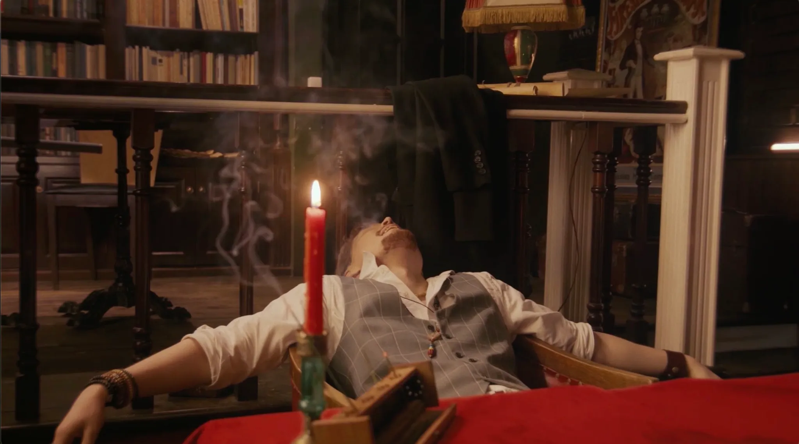

Мистическая комедия — про афериста, попавшегося в собственную яму!
Спиритический сеанс посещает настоящий призрак ведьмы из прошлого
Я на этом проекте:
Оператор постановщик (раскадровка)
Автор сценария
Исполнительный продюсер
Фильм сделан в соавторстве с Дилявером Заитовым в качестве его диплома дляМосковской Школы








